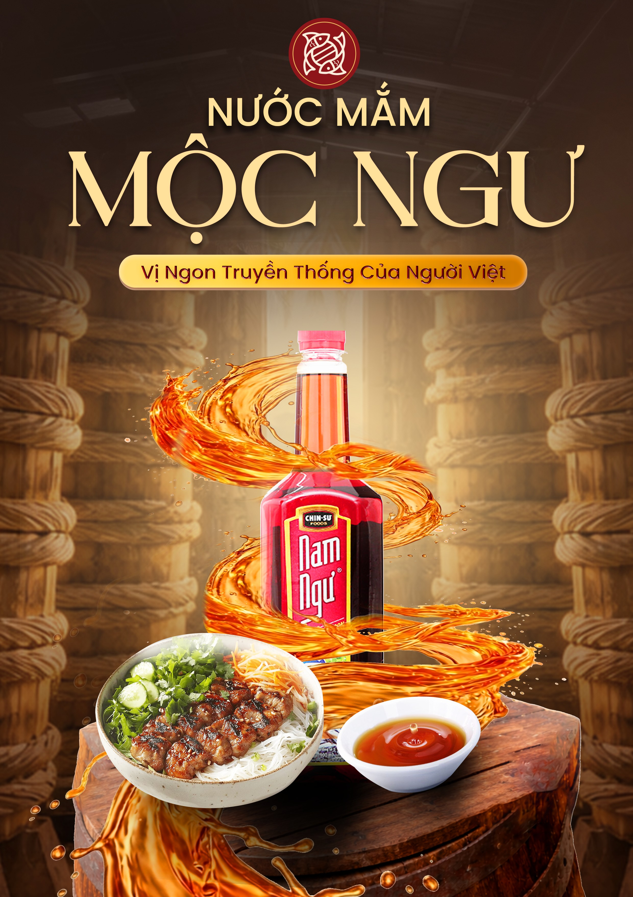
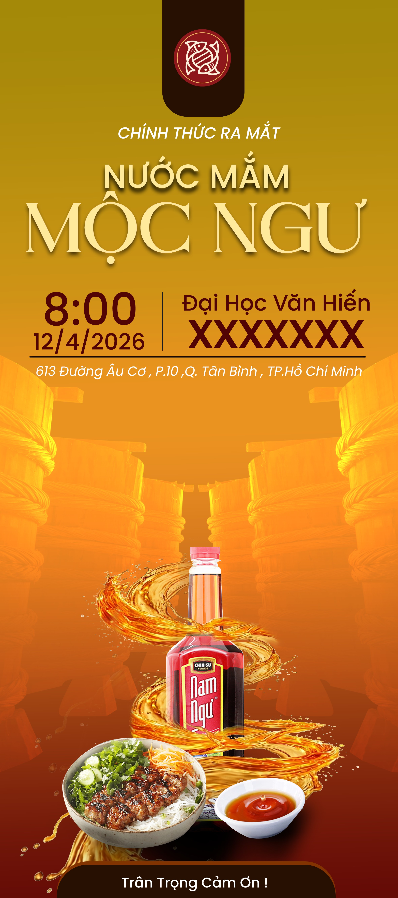

Giới thiệu
Thương hiệu nước mắm Mộc Ngư được hình thành từ khát vọng gìn giữ và phát huy giá trị tinh hoa của nước mắm truyền thống Việt Nam. Tên gọi “Mộc Ngư” là sự kết hợp giữa “Mộc” – gợi lên sự mộc mạc, chân chất, tự nhiên, nguyên bản và những gỗ dùng để ủ cá – một biểu tượng của phương pháp sản xuất truyền thống và “Ngư” – chỉ cá, nguyên liệu chính làm nên nước mắm, đồng thời cũng gợi nhắc đến hình ảnh người ngư dân cần cù, gắn bó với biển cả. “Mộc Ngư” không chỉ là một cái tên mà còn là một tuyên ngôn về triết lý sản phẩm: mang đến những giọt nước mắm tinh túy nhất, được ủ chượp theo phương pháp truyền thống, không pha tạp, giữ trọn vẹn hương vị tự nhiên từ biển cả.
Tầm nhìn
Trở thành thương hiệu nước mắm truyền thống cao cấp hàng đầu Việt Nam, được tin dùng bởi những người yêu ẩm thực và trân trọng giá trị văn hóa truyền thống.
Sứ mệnh
Gìn giữ và phát huy tinh hoa nghề làm nước mắm truyền thống Việt Nam, mang đến những sản phẩm chất lượng vượt trội, an toàn cho sức khỏe và góp phần nâng tầm giá trị nông sản Việt trên thị trường trong nước và quốc tế.
Giá trị cốt lõi
- Truyền thống: Kế thừa và phát huy những bí quyết ủ chượp lâu đời, tôn trọng quy trình tự nhiên.
- Tinh túy: Chọn lọc nguyên liệu tươi ngon nhất, chắt chiu từng giọt nước mắm tinh khiết.
- Chân thật: Minh bạch về nguồn gốc, quy trình sản xuất, không sử dụng phụ gia hay chất bảo quản.
- Bản sắc Việt: Lồng ghép những giá trị văn hóa, hình ảnh làng nghề vào từng sản phẩm, từng câu chuyện.
- Bền vững: Phát triển gắn liền với bảo vệ môi trường biển và nâng cao đời sống ngư dân.

